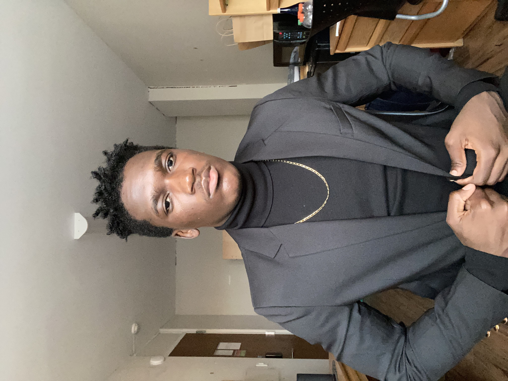
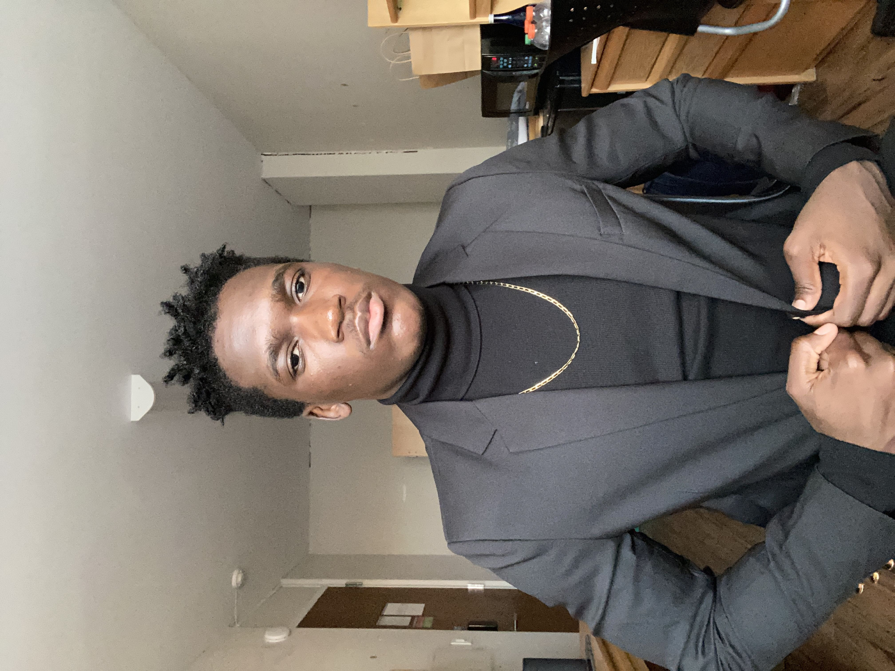

My full name is: Watson Lenard Moses Mushabati Mushimbei.
These fives names each have a source and the source is important.
Each serves a purpose, but most people think that I'm Watson King .
Which of course isn't a self proclaimed title of superiority but the evidence of the crown on my head and to music of course
To get a better picture of who I am, follow me on my instagram.
One thing about me is that I love Music.
And that I used to love writing poetry as well as playing soccer.
My favourite positions is center-back or defensive mid.
I'll probaby get a pass in this class, it's kinda sad that it's pass/fail. But oh well.
My intended major is: ....... Electrical Engineering... I know it's unpopular.
But who knows, I might change to CS but as for now, I'm set of EE.
 
